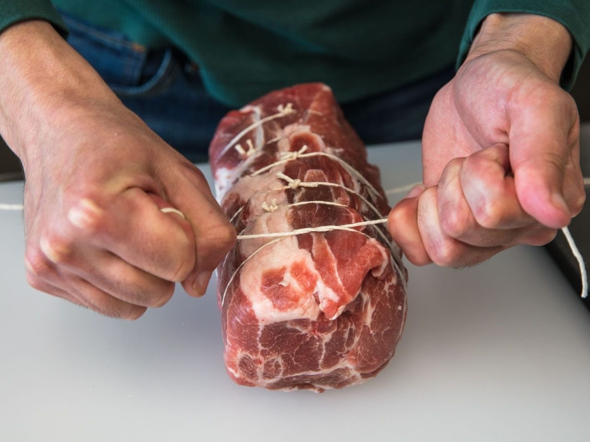
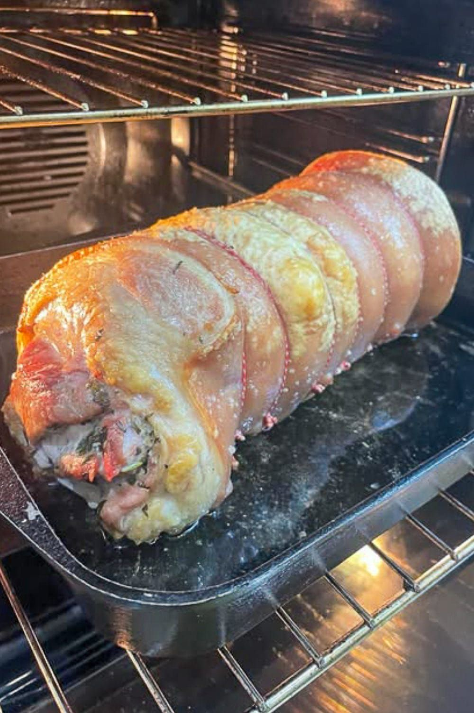
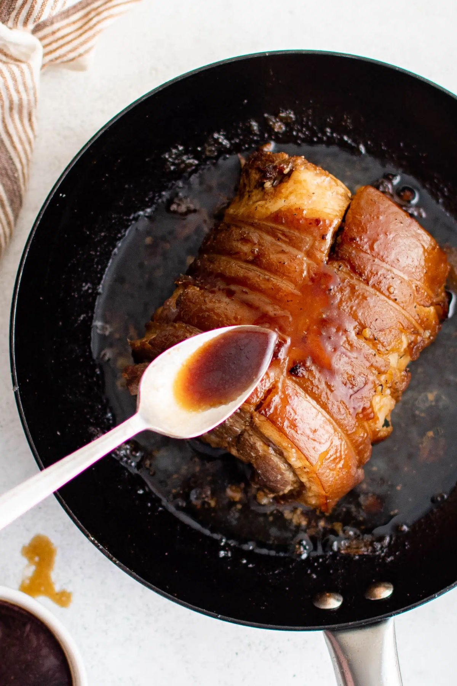
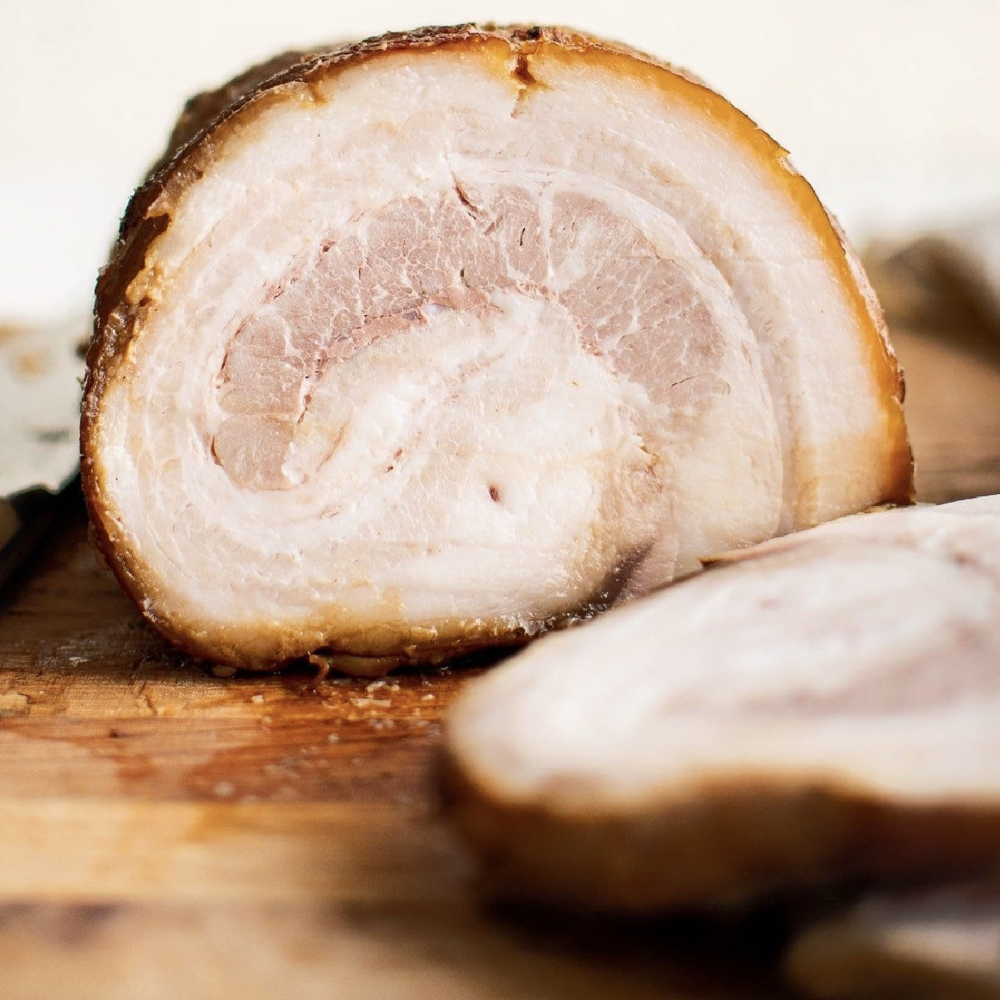

How We Make Our Pork Chashu

Pork Collar
We use pork collar — a well-marbled cut from the shoulder to the neck. The fat running through this cut gives the chashu its rich flavor and tender texture.

170°C — 20 to 25 minutes
The meat is patted dry to remove excess moisture and any unwanted odor. It is then tied with kitchen twine to hold its shape, and roasted in the oven at 170°C (340°F) for 20–25 minutes.

63°C — 5 to 6 hours
The roasted pork is transferred into a soy-based marinade and cooked slowly at 63°C (145°F) for 5 to 6 hours. This gentle process locks in the juices and creates a deeply flavored, melt-in-your-mouth texture.

Sliced & Finished
The chashu is sliced to order and placed on your ramen. Each slice carries the deep aroma of the marinade and the rich flavor of slow cooking.
Как мы готовим наш Тясю из свинины
Свиная шея
Мы используем свиную шею — мраморный отруб от лопатки до шеи. Жировые прожилки придают тясю насыщенный вкус и нежную текстуру.
170°C — 20–25 минут
Мясо тщательно обсушивают, чтобы удалить лишнюю влагу и нежелательные запахи. Затем его перевязывают кулинарной нитью для сохранения формы и запекают в духовке при 170°C в течение 20–25 минут.
63°C — 5–6 часов
Запечённую свинину помещают в маринад на основе соевого соуса и медленно готовят при температуре 63°C в течение 5–6 часов. Этот бережный процесс сохраняет все соки и создаёт тающую во рту текстуру с глубоким вкусом.
Нарезка и финальный штрих
Тясю нарезают перед подачей и кладут в рамен. Каждый ломтик несёт в себе глубокий аромат маринада и насыщенный вкус медленного приготовления.
Ինչպես ենք պատրաստում մեր Խոզի Չաշուն
Խոզի վզի մաս
Մենք օգտագործում ենք խոզի վզի մաս — մարմարյա կտրվածք ուսից մինչև վիզ։ Այս կտրվածքի ճարպը չաշուին տալիս է հարուստ համ և նուրբ կառուցվածք։
170°C — 20–25 րոպե
Միսը մանրակրկիտ չորացվում է ավելորդ խոնավությունը և տհաճ հոտը հեռացնելու համար։ Այնուհետև այն կապվում է խոհանոցային թելով ձևը պահպանելու համար և թխվում ջեռոցում 170°C-ում 20–25 րոպե։
63°C — 5–6 ժամ
Թխած խոզը տեղափոխվում է սոյայի հիմքով մարինադ և դանդաղ եփվում 63°C-ում 5–6 ժամ։ Այս մեղմ գործընթացը պահպանում է հյութերը և ստեղծում բերանում հալվող կառուցվածք՝ խոր համով։
Կտրատված և ավարտված
Չաշուն կտրատվում է պատվերի համաձայն և դրվում ռամենի վրա։ Յուրաքանչյուր կտոր կրում է մարինադի խոր բույրը և դանդաղ եփման հարուստ համը։